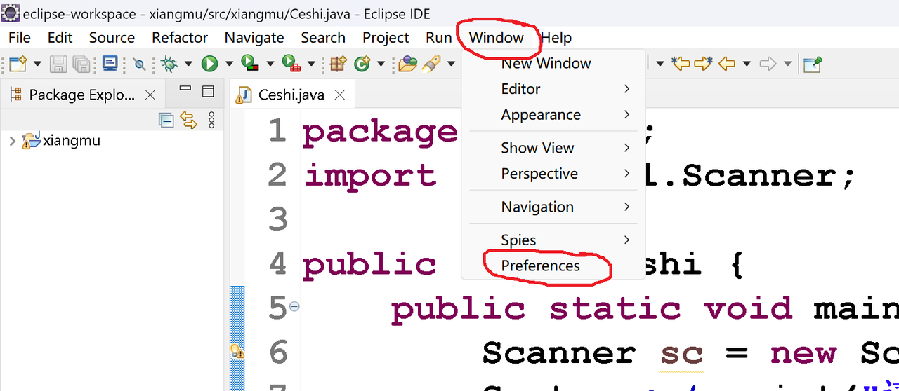
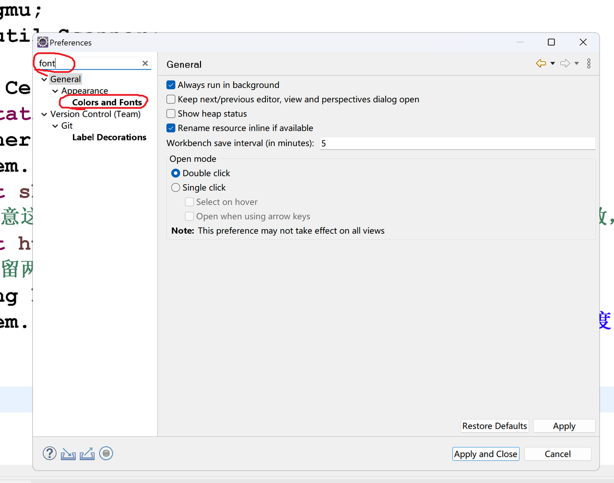
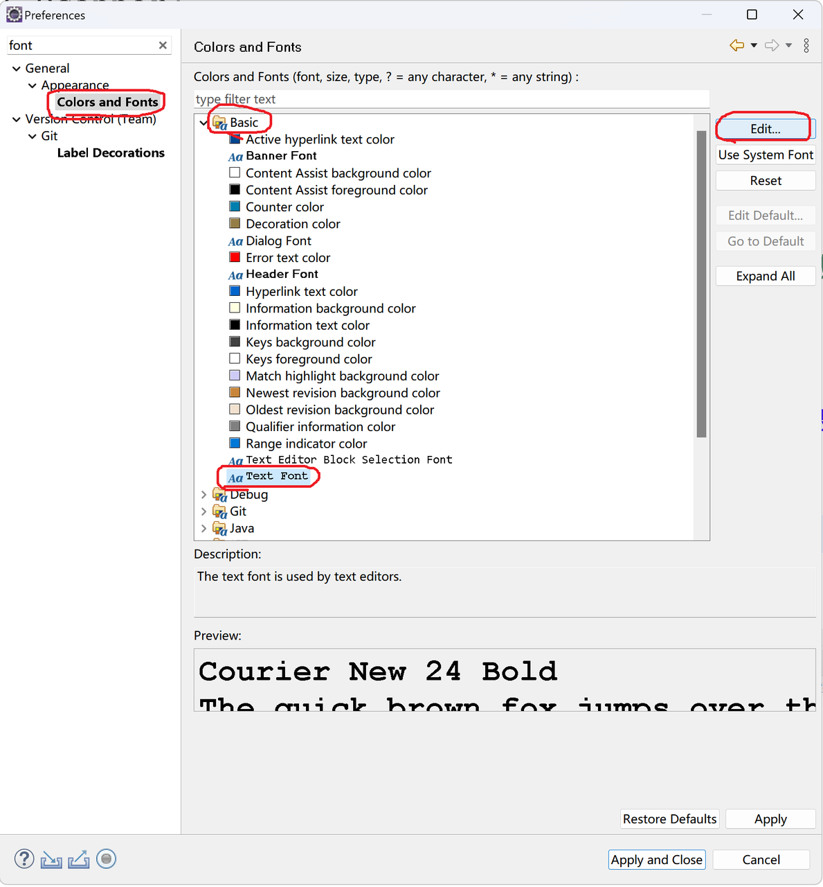
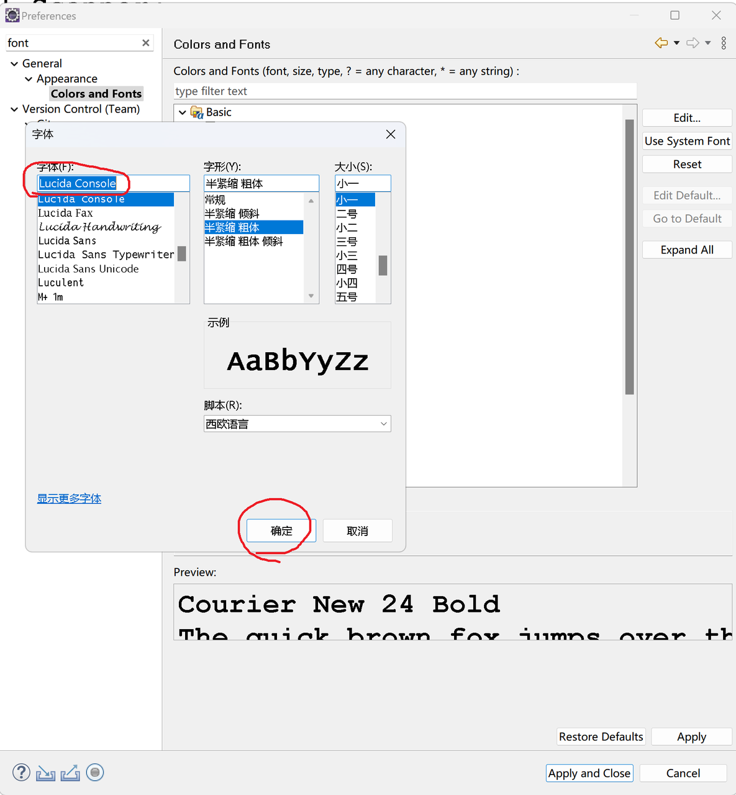
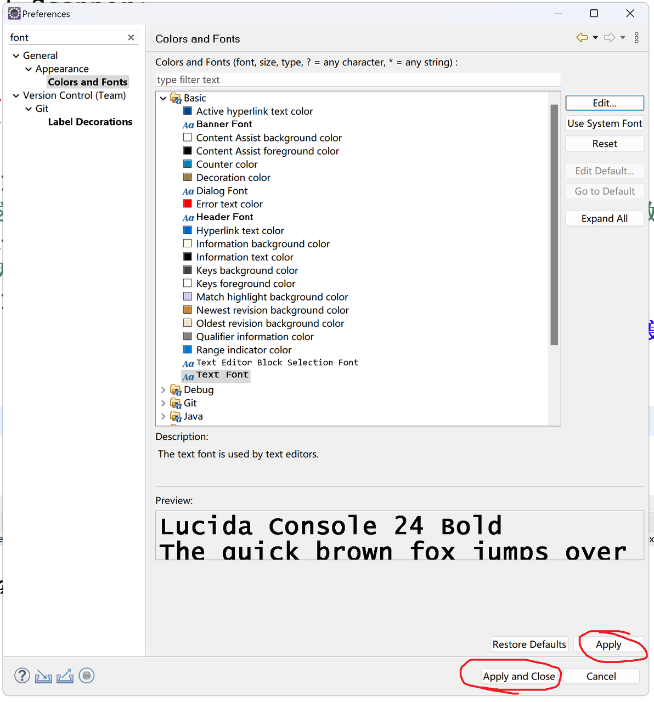
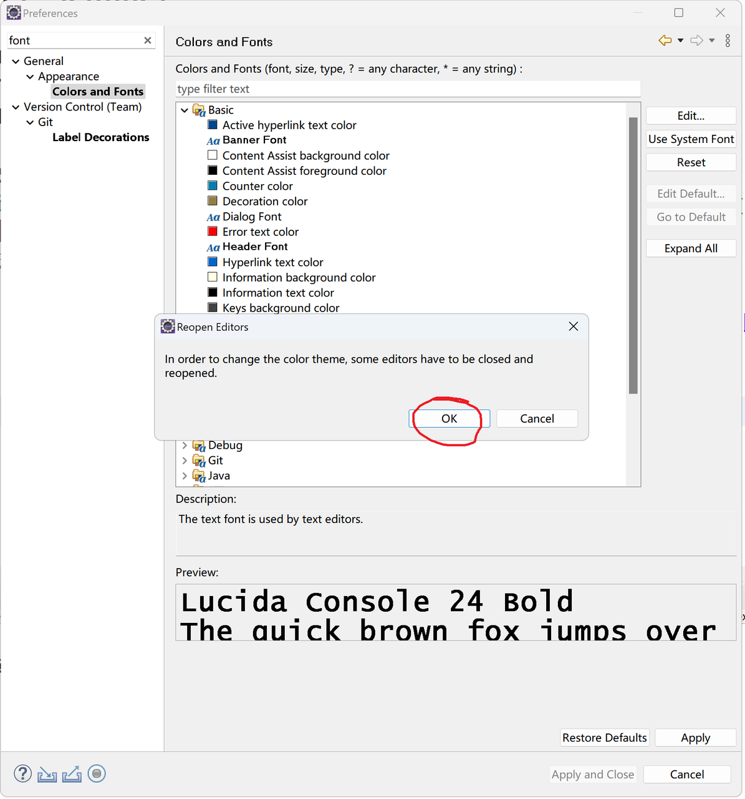

Eclipse修改代码字体
如果Eclipse默认的代码字体看腻了，可以修改成其他字体。
1、找到菜单 Window => Preferences
2、在Preferences对话框左上角输入“font”，选择“Colors and Fonts”
3、找到并选中 Basic => Text Font，点击右上角的 Edit...
4、在字体对话框中，选择你想换成的字体，等宽类型的字体适合编程，比如可以换成Windows自带的 Lucida Console 字体，选好点击“确定”。
也可以选择其他字体，找一款自己喜欢的。但是要注意，如果不了解字体的特点，最好选择带有“Mono”、“Code”、“Console”这类单词的字体，因为这样的字体一般是等宽字体，在等宽字体中，字符的宽度是一样的。如果代码字体不等宽，上下对齐代码，尤其是对齐空格，会很困难。
5、点击“Apply”和“Apply and Close”，Apply是“应用”，Close是“关闭”
6、点击“OK”
7、可以看到代码已变成新的字体